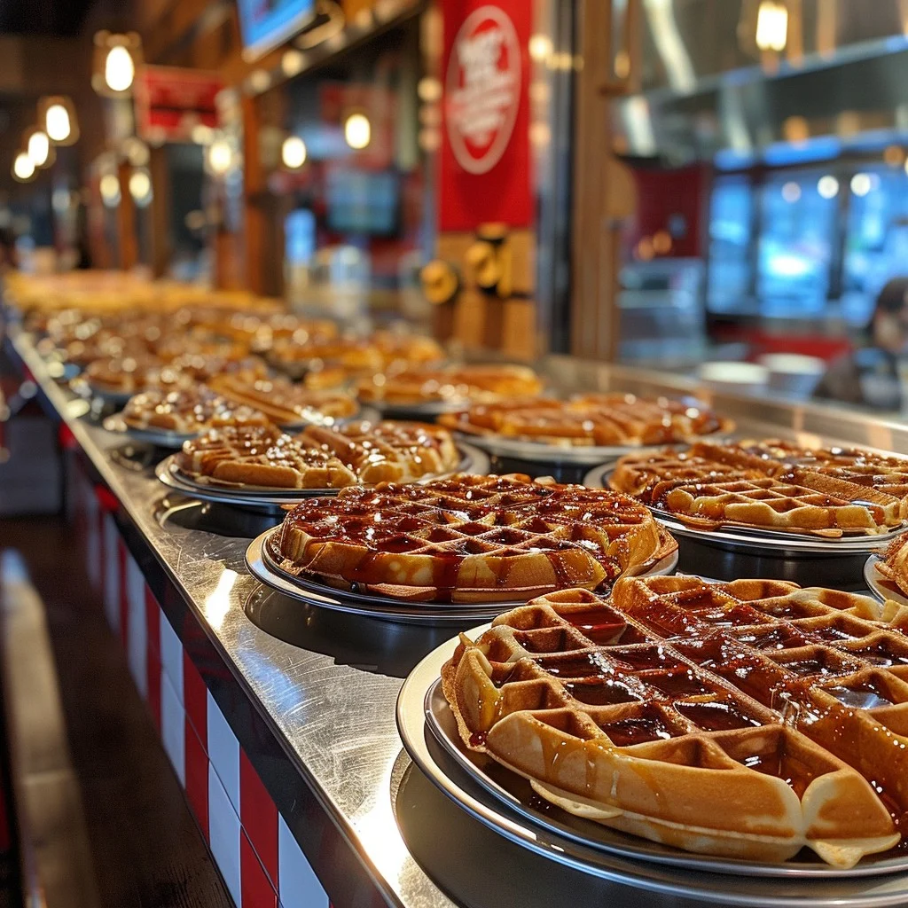

Description
Boasting a crunchy exterior with just the right amount of fluff, these waffles will be a favorite for you and your family! Utilizing Einkorn
flour, an ancient and unmodified wheat, the chef is able to take advantage of an unmatched nutrient profile without sacrificing quality or taste.
Feel free to top these bad boys off with your favorite organic fruit, or even a little powdered sugar if you're looking to splurge! These waffles
are so easy and delicious that you can make them for breakfast, dinner, or even lunch!
Ingredients
- 2 Cups (240 g) All-Purpose Einkorn Flour or 2½ Cups (240 g) Whole Wheat Einkorn Flour
- 2 Tablespoons Granulated Sugar
- 2 Teaspoons Baking Powder
- ½ Teaspoon Baking Soda
- ½ Teaspoon Salt
- 1 Cup (240 g) Milk
- 1 Cup (230 g) Yogurt
- 6 Tablespoons (84 g) Unsalted Butter, Melted
- 3 Large Eggs, Separated
Steps
- Heat waffle iron according to manufacturer's instructions.
- Preheat oven to 300°F degrees. Place a baking sheet in the oven.
- In a medium bowl, whisk together flour, sugar, baking powder, baking soda, and salt.
- In a large bowl, whisk together the milk, yogurt, butter, and egg yolks.
- Whisk the flour mixture into the wet ingredients until smooth.
- In the bowl of a standing mixer fitted with a wire whisk attachment, beat the egg whites until soft peaks form, about 3 minutes. Use a rubber
spatula to gently fold the egg whites into the waffle batter until just mixed.
- For large Belgian waffles, spread 1 cup of the batter nearly to the edges of the waffle iron. For regular waffles, use ½ cup of batter.
- Bake using a medium-high setting for approximately 4 minutes, or until the waffles are deeply golden and crisp.
- Serve immediately with maple syrup, or keep warm in the oven until ready to serve.
Home